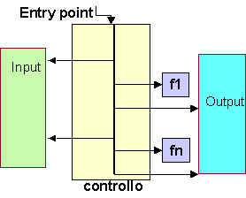

I linguaggi di programmazione più diffusi (Cobol, FORTRAN, C, C++, C#, Java, Lisp, Prolog, CLR, ByteCode, etc) sono tutti computazionalmente completi, cioè dotati della capacità tipica del formalismo della TM di poter esprimere la soluzione ad ogni problema computabile (che viene definito tale proprio perchè è possibile definire una TM che lo risolve).
Ciò che differenzia i linguaggi e che segna la storia stessa della evoluzione dei linguaggi è la capacità di esprimere elementi utili alla organizzazione del software.
Già i primi linguaggi di programmazione (FORTRAN e LISP) nascono con l'intento di fornire costrutti utili ad elevare il livello di astrazione e a promuovere la modularità del software. Due di questi costrutti risultano ancora oggi fondamentali: la procedura e la funzione.
Le procedure e le funzioni costituiscono una prima, elementare, ma tuttora fondamentale forma di "componente software riusabile" all'interno di una proto-infrastruttura costituite dal programma principale. Sul piano semantico questi costrutti catturano l'idea di un automa risolutore che può anche riusare (copie di) sè stesso per fornire la soluzione ad un problema, dando pieno supporto a schemi di ragionamento ricorsivo e iterativo.
|
Figure 1. Read-Eval-Print

|
L'evoluzione introdotta negli anni 70 dalla programmazione strutturata ha promosso l'eliminazione dai programmi del salto incondizionato (goto) a favore di costrutti (for, while-do) capaci di catturare l'essenza del ragionamento iterativo, di disciplinare la progettazione e costruzione di cicli e di aumentare l'efficienza rispetto a iterazioni realizzate da chiamate ricorsive di funzioni in assenza della ottimizzazione relativa all tail-recursion.